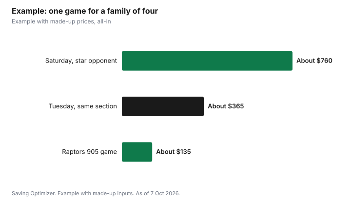

Sports · Canada
Raptors Tickets for Less in 2026-27: A Canadian Guide to Cheaper Seats, Resale Rules and Raptors 905

The cheapest way to see the Raptors is to choose the game before the seat: weeknight games against less popular opponents usually cost far less than weekend games against star teams, and prices tend to drop closer to tip-off when demand is weak. Compare the all-in price, including fees and taxes, on the official seller and on resale sites. In Ontario, resale tickets cannot legally be sold for more than the original total price plus taxes and the platform's standard fees, and resale buyers must get a money-back guarantee or proof the ticket is valid. If you mainly want a live basketball night, Raptors 905 games in Mississauga are the lower-cost option. The 2026-27 season starts in Toronto on October 21, 2026 against the Chicago Bulls.
Key takeaways
- Choose cheaper games: weeknights and less popular opponents.
- Compare all-in prices; advertising a price you cannot pay because of mandatory fees is drip pricing.
- Ontario caps resale at the original total price plus taxes and platform fees.
- Resale buyers in Ontario must get a money-back guarantee or proof of validity.
- Raptors 905 in Mississauga offers flex packs and group tickets.
- Worked example uses made-up figures.
Pick the right game
Ticket prices for many live events now move with demand, like airline seats. You do not need exact numbers to use that: the same seat costs more when more people want it. Things that usually raise demand include Friday and Saturday nights, holiday weeks, marquee opponents and star players, home openers and special theme nights. Things that usually lower it include Monday to Wednesday games, opponents with fewer stars, and games the same week as a big Leafs or concert night downtown.
Look at the schedule on NBA.com or the Raptors' site, list five or six games that suit you, and compare prices for the same section across all of them before you buy. Our guide to dynamic pricing explains why prices jump and when they tend to fall.
Know the real price: all-in, in Canadian dollars
Ontario's Ticket Sales Act requires primary sellers to show the total price of a ticket in Canadian dollars, with an itemized list of fees, service charges and taxes, and to print or display the total price paid on the ticket. Federally, the Competition Bureau says advertising a price that cannot actually be paid because of mandatory fixed fees, other than government charges, is drip pricing and is false or misleading. In practice, compare the final checkout total, not the headline seat price. Our guide to ticket fees and all-in pricing covers the rules in more detail.
Buying resale in Ontario: the rules that protect you
The Ontario government's ticket page, updated June 4, 2026, sets out rules for tickets to sporting, recreational and cultural events in Ontario, wherever the seller is based:
- It is illegal to resell a ticket, or help resell it, for more than the original total price paid to the primary seller. A resale buyer pays no more than that original total, plus applicable taxes and the resale platform's standard service fees.
- Resale listings must show the original total price, an itemized list of fees, service charges or taxes, and the total resale price.
- Sellers must have the ticket in their possession or control before listing it.
- When you buy from a secondary seller or platform, you must receive written proof from the primary seller that the ticket is valid, or a written money-back guarantee. That covers tickets that do not get you in and events cancelled before the ticket is used.
- Ticket bots are banned, as is knowingly selling tickets bought with bots.
If a resale listing for a Raptors game shows a price far above face value, ask for the original total price, which the seller must show. You can file complaints with Consumer Protection Ontario.

Other ways to pay less
- Buy late for low-demand games. For a weeknight game with plenty of seats left, prices on the official and resale sites can soften in the last day or two. For big games, waiting is riskier.
- Sit higher, centre court. Upper-level seats near centre court can give a better view of plays than lower corners at a similar price.
- Split a season or partial plan. If a friend group shares a plan, each person takes a few games, which can lower the per-game cost compared with single tickets. Read the transfer and resale terms first.
- Use presales carefully. Some cards and memberships give early access, but early access is not a discount. Our guide to credit card presales explains the trade-off.
- Ask about accessibility programs. If you need a support person, the Access 2 Card may give them a free or reduced ticket at participating venues.
- Budget for the rest of the night. Transit instead of downtown parking, and eating before you arrive, often save more than a cheaper seat.
If you cannot use your tickets
Plans change, especially with weeknight games. Under Ontario's rules, you can resell a ticket for up to the original total price you paid, and the resale platform can add its standard service fees and applicable taxes for the buyer. If you list through a platform, only the platform can apply fees. You will also need proof of the original price, because platforms cannot list a ticket without it. Transferring a ticket to a friend or family member at cost is often the simplest option. Read the team's or seller's transfer terms before you buy, so you know what is allowed if your plans change.
Raptors 905: live basketball for less
Raptors 905, the Raptors' G League affiliate, plays home games at the Mississauga Sports and Entertainment Centre. The team's site offers single tickets, flex packs, group tickets, school programs and season memberships. For families with young kids, a 905 game is a lower-cost way to try live basketball and see players who may move up to the NBA.
The 905 entry policy lists rules worth knowing before you pack: no outside food or beverage, no backpacks, no bags or purses larger than 14 x 14 x 6 inches, and no strollers, and fans go through metal detector screening at home games.
| Option | Best for | What to watch |
|---|---|---|
| Weeknight Raptors game, upper level | Adults and older kids on a budget | Compare the all-in price for several games |
| Resale ticket in Ontario | Sold-out or last-minute games | Cap at original total price plus taxes and platform fees; money-back guarantee |
| Shared partial plan | Friend groups | Transfer and resale terms |
| Raptors 905 in Mississauga | Families and first-timers | Flex packs and group tickets; bag and food rules |
| Watch at home | Big games with high prices | Broadcast and streaming costs |
Worked example (made-up figures)
The Singh family is a made-up example, and all prices are invented. Two adults and two kids want one game this season.
- A Saturday game against a star-heavy team: a made-up $180 per upper-level seat, all-in, or $720, plus a made-up $40 for parking. Total about $760.
- A Tuesday game against a less popular opponent, same section: a made-up $85 per seat all-in, or $340. They take transit for a made-up $25 return for the family and eat before the game. Total about $365.
- A Raptors 905 game in Mississauga: a made-up $30 per seat, or $120, plus a made-up $15 for parking. Total about $135.
In this example, picking the Tuesday game saves about $395 compared with the Saturday game, without changing seats. The 905 game costs less than a fifth of the Saturday game.
Before you buy
- Make a shortlist of games that suit your schedule.
- Compare all-in prices for the same section across those games.
- On resale, look for the original total price and the guarantee.
- Decide on transit or parking before you buy.
- Set a total budget for the night, including food.
Sources
- NBA.com, Chicago Bulls vs Toronto Raptors, Oct 21, 2026, game details (Toronto), nba.com/raptors, as of 7 Oct 2026.
- Government of Ontario, Buying tickets to events in Ontario (resale price cap; listing rules; money-back guarantee; all-in price; bots), ontario.ca, updated June 4, 2026, as of 7 Oct 2026.
- Competition Bureau Canada, Misleading representations and deceptive marketing practices (drip pricing), competition-bureau.canada.ca, page modified 2026-06-01, as of 7 Oct 2026.
- Raptors 905, Tickets (flex packs, group tickets, schools, season membership) and Entry Policy (Mississauga Sports and Entertainment Centre; food, bag and stroller rules; screening), raptors905.gleague.nba.com, as of 7 Oct 2026.
- Family, ticket prices, parking and transit costs in the worked example are made up.
Frequently asked questions
How can I get cheap Raptors tickets?
Pick weeknight games against less popular opponents, sit in the upper level near centre court, compare all-in prices across several games, and consider buying late for low-demand games.
Can resellers charge more than face value in Ontario?
No. Ontario says resale tickets cannot be sold for more than the original total price, plus applicable taxes and the resale platform's standard fees.
What protection do I get buying resale tickets in Ontario?
You must get written proof of validity from the primary seller or a written money-back guarantee from the seller or platform.
When does the 2026-27 Raptors season start at home?
NBA.com lists the Chicago Bulls at the Raptors in Toronto on October 21, 2026.
Where do Raptors 905 play?
At the Mississauga Sports and Entertainment Centre. The team offers single tickets, flex packs, group tickets and season memberships.
Are ticket fees included in the price?
Ontario requires primary sellers to show the total price with itemized fees, and the Competition Bureau treats unattainable advertised prices with mandatory fixed fees as drip pricing.
Researched and drafted with AI assistance and fact-checked against official Canadian sources. How we create content.
Disclosure: No ticket seller or platform is recommended. There are no affiliate links on this page and no partnership is claimed. Education only.